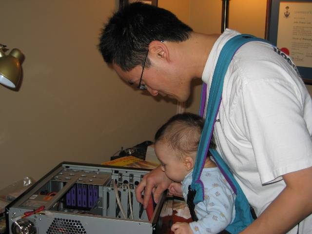

I finally got around to updating my venerable desktop computer this weekend. It was a 1.6GHz P4 with 768MB RDRAM. I simply needed more RAM to run multiple virtual computers simultaneously using VPC. After pricing 512MB RDRAM RIMM's, I realized that it would be cheaper to just buy a whole new computer.
I went down to my local computer parts store and went home with a bag of parts to build my new desktop:
Since I already have a 128MB ASUS 9560VS dual DVI video card to drive my twin Samsung 172T DVI panels, I skipped upgrading the video subsystem.
It's been over two years since I built a desktop PC. I was blown away at how much attention to detail there was in the Antec case. This case, which includes a 380W power supply, is < $100US, and I had been accustomed to crappy workmanship in cases with this price tag. That combined with assembling the case using SATA connectors instead of ribbon connectors made for an incredibly pleasant experience. I also had a great helper:

I created a RAID0 array using the built-in Intel ICH5R SATA RAID controller. This, and an earlier discussion with Brad Wilson about RAID controllers got me interested in this hardware category. A bit of searching revealed a number of places where there are comprehensive reviews of various controllers.
One of the most interesting that I read was one created by Jim Gray. Titled A Quick Look at Serial ATA (SATA) Performance, it provides a quick look at the performance characteristics of a 4-port 3Ware 8506-4 controller vs. a 4-port Highpoint 1540 controller. The 3Ware card is ~$86 / port vs. ~$18 / port for the Highpoint card. The 3Ware card provides significantly better sequential I/O performance than the Highpoint card, but the Highpoint card provides somewhat better random I/O performance. The sequential I/O performance of the 3Ware card can partially be explained by the bus connector; the 3Ware card supports 66MHz/64bit (528MBps) PCI interface vs. the 33MHz/32bit (132MBps) interface of the Highpoint card (see Figure 1 from the review).
Bottom line: inexpensive RAID controllers have a significant price/performance advantage with random I/O performance.
Posted by John at February 6, 2004 12:06 PM | TrackBackThe antec case rocks - I've had one for about 5 months now. It really makes a big difference having a quieter case - especially if your work area is quite small - as mine is.
Posted by: Ian MacLean at February 8, 2004 08:45 AMRaid 0 also DOUBLES your chance of drive failure, which is why I don't use it. The additional performance isn't worth the risk; buy 2gb of memory instead. The fastest disk of all is the one in memory, eg, cache.
I suppose if you're religious about backups, but human
Posted by: Jeff Atwood at July 3, 2004 09:37 PM